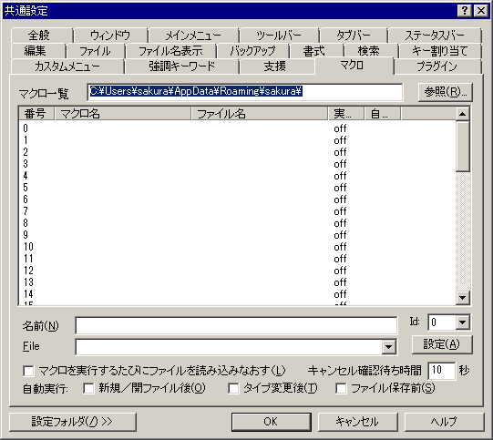

[
目次
]
共通設定 『マクロ』プロパティ
『全般』
『ウィンドウ』
『メインメニュー』
『ツールバー』
『タブバー』
『ステータスバー』
『編集』
『ファイル』
『ファイル名表示』
『バックアップ』
『書式』
『検索』
『キー割り当て』
『カスタムメニュー』
『強調キーワード』
『支援』
『マクロ』
『プラグイン』

ここで登録されたファイルは、
登録済みマクロ
メニューの下に一覧表示されます。
マクロの詳細は、
マクロについて
をご覧ください。
マクロフォルダ
マクロリストのファイル名が相対パスの場合の元になるフォルダを指定します。
フォルダ名が相対パスの場合も、フォルダ名は、設定フォルダからの相対パスとして認識します。ただし、「..」は使えません。
たとえば、「Macro\」と指定し、設定ファイルが「C:\Program files\sakura」フォルダにある場合は、「C:\Program files\sakura\Macro\」を指すことになります。
キーマクロの記録
は、このフォルダに「RecKey.mac」と言うファイル名で保存されます。
[参照]
ボタン
マクロが格納されているフォルダを指定します。
マクロ一覧
リスト
マクロの一覧を表示します。
５０個まで登録できます。
マクロを選択すると、下に詳細を表示します。
名前
マクロの名前を指定します。
ID
マクロを登録する位置を指定します。
File
マクロのファイル名を指定します。
※フルパス指定も有効です。
□
マクロを実行するたびにファイルを読み込みなおす
マクロ実行時に対応するマクロファイルを読み込みなおしてからマクロを実行します。
キャンセル確認待ち時間
(10秒)
WSHマクロ・WSHプラグインのキャンセル確認ダイアログを表示するまでの時間を秒で指定します。
0を指定すると、ダイアログを表示しません。(sakura:2.0.6.0 以降)
□
自動実行：新規／開ファイル後
ファイルを読み取った直後または(無題)になるタイミングでマクロを実行します。
新規作成、ファイルを開く、閉じて(無題)、名前をつけて保存、開き直す系コマンドなどで発生します。
マクロ一覧では「O」で表示されます。1つのみ指定可能です。
□
自動実行：タイプ変更後
タイプ別設定一覧で、「一時適用」を行ったときに実行します。
マクロ一覧では「T」で表示されます。1つのみ指定可能です。
□
自動実行：ファイル保存前
ファイル保存の直前にマクロを実行します。
ファイル名の扱いは
GetSaveFilename
などを参照してください。
マクロ一覧では「S」で表示されます。1つのみ指定可能です。
[設定]
ボタン
マクロファイルをIDで示す位置に登録します。
・ファイル名が未入力の場合 --> 未登録として扱われる
・名前が未入力の場合 --> ファイル名がマクロ名とみなされる
登録を解除するには、名前及びファイル名を空欄にして[設定]ボタンを押します。
[設定フォルダ]
設定フォルダ
ボタンは、
ユーザー別設定
を行っている場合のみ表示されます。
ヒント
名前、ファイルなどを変更しても、
[設定]
ボタンを押さないとリストには登録されません。
コマンドラインオプション
による起動時のマクロ実行もあります。
注意
ツールバーに登録できるのは
20番目までです。
50番目まですべて登録できます。
 ヒント
ヒント 注意
注意